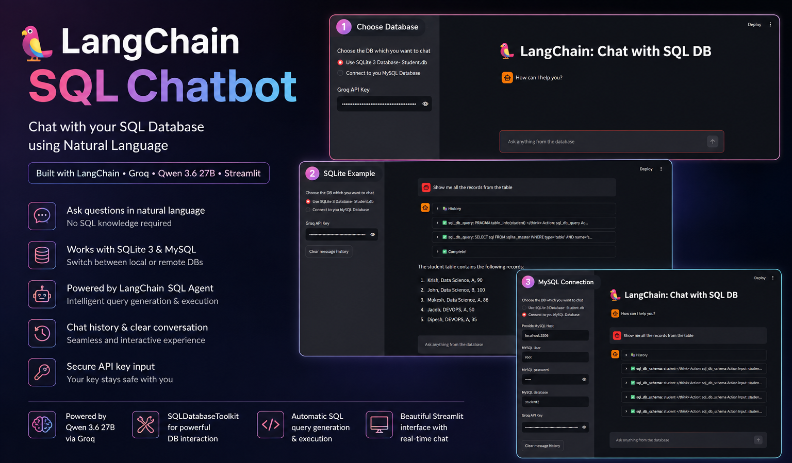

LangChain SQL Chatbot
A natural-language SQL assistant using LangChain, Groq and Qwen to query SQLite and MySQL databases.

Generative AI / ML Developer
I build practical AI systems using Python, machine learning, LLMs, RAG, AI agents, NLP and intelligent applications.
Focused on turning modern AI techniques into useful, deployable products with clean interfaces and real-world applications.
View my work ↗/Selected work

A natural-language SQL assistant using LangChain, Groq and Qwen to query SQLite and MySQL databases.

An AI research assistant that intelligently combines web search, Wikipedia and arXiv through a LangChain agent.

A PDF-based conversational RAG system with semantic retrieval, vector search and context-aware chat history.

A RAG-powered research assistant for querying research papers using embeddings, FAISS and LLMs.

A deep learning model that predicts customer churn with preprocessing and real-time Streamlit deployment.

An NLP deep learning system that predicts the next word using an LSTM trained on Shakespeare's Hamlet.
/Building journey
Building practical applications around LLMs, RAG systems, prompt engineering and AI agents.
Exploring tool-using agents, structured workflows, search systems and LLM orchestration.
Working with embeddings, vector databases, semantic retrieval and document intelligence.
Building sequence-based NLP systems using tokenization, embeddings, LSTMs and TensorFlow.
Connecting intelligent models with databases, APIs and real-world application workflows.
/About
I'm a Generative AI / ML developer focused on building practical AI applications. I enjoy working with Python, machine learning, deep learning, LLMs, RAG, AI agents, LangChain, NLP and intelligent data-driven systems.
AI / ML
/Start a conversation
Let's build something intelligent, useful and real.
Let's connect ↗